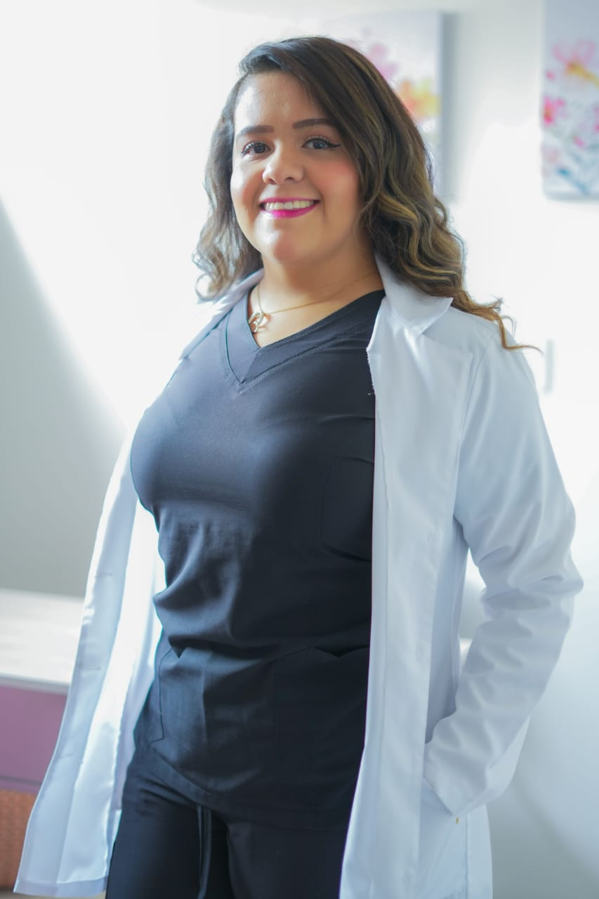

Ilse Paola
Nutrióloga
No necesitas otra dieta estricta. Necesitas aprender a elegir sin culpa, sin extremos y sin miedo.
Muchas de mis pacientes llegaron sintiéndose así:
Te sientes perdida entre tantas dietas y consejos
Empiezas con motivación, pero no logras mantenerlo
Sientes culpa después de comer o ansiedad con la comida
Y no, no es falta de fuerza de voluntad 💚
Es que nadie te ha enseñado a hacerlo de forma sostenible.
Y no, no creo en las dietas que te hacen sufrir para ver resultados.
Soy nutrióloga y acompaño a personas que están cansadas de intentar empezar de cero una y otra vez.
Mi enfoque es ayudarte a entender tu cuerpo, crear hábitos reales y mejorar tu relación con la comida sin culpa ni restricciones innecesarias.
Porque comer bien también debería sentirse bien 💚
Aquí no seguimos reglas rígidas. Construimos un proceso que se adapta a ti, a tu ritmo y a tu vida.
Aprendes a comer sin miedo ni culpa, sin eliminar alimentos.
Trabajamos tu relación con la comida, no solo lo que comes.
Cambios reales que puedes mantener en tu día a día.
No estás sola en el proceso, te acompaño en cada paso.
Todas las opciones incluyen acompañamiento real, un plan adaptado a ti y seguimiento durante tu proceso.
Ideal si prefieres atención cara a cara en consultorio.
La opción más flexible, desde donde estés.
Comodidad total sin salir de casa.
Respuesta en menos de 24 hrs
Cada proceso es distinto, pero estas son algunas de las áreas en las que puedo acompañarte:
Mejora tu rendimiento, energía y recuperación con una alimentación adaptada a ti.
Reduce inflamación, mejora tu digestión y equilibra tu microbiota.
Apoya tu cuerpo en cada etapa y mejora tu bienestar hormonal.
No necesitas hacerlo perfecto, solo empezar. Agenda tu consulta y comienza a mejorar tu relación con la comida, sin culpa y sin extremos.
Agendar por WhatsApp